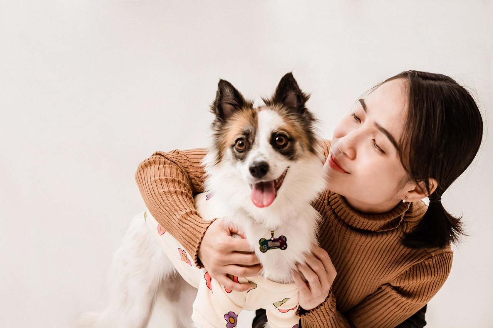
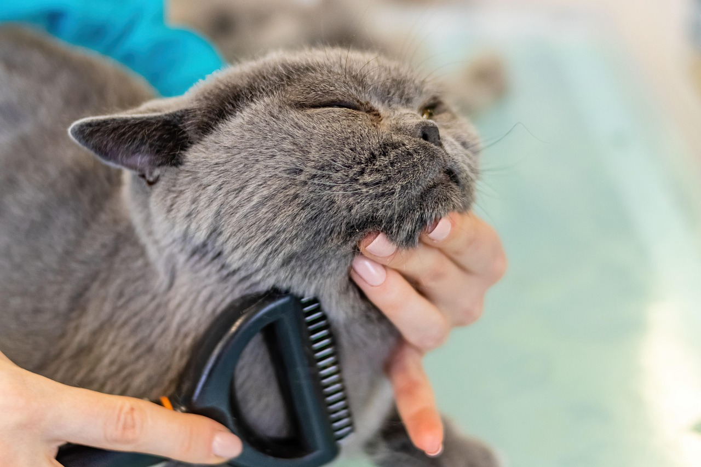

Chi siamo
La nostra storia
Tutto è iniziato da un incontro: uno sguardo, una zampa tesa, un cuore che non ha saputo voltarsi dall'altra parte.
Zampa Amica, attiva nella città di Padova, nasce dal desiderio di dare una seconda possibilità agli animali randagi o abbandonati, costruendo un ponte tra chi cerca amore e chi ha tanto da darne.
Con l'aiuto delle nostre volontarie e volontari recuperiamo e curiamo gli animali abbandonati, fino a quando trovano una nuova famiglia.


Il nostro team
Siamo un gruppo di studenti dell'Università di Padova. Siamo amanti degli animali, uniti dalla convinzione che la gentilezza possa davvero cambiare il mondo — un'adozione alla volta.
Zampa Amica è più di un rifugio: è una famiglia allargata dove ogni volontario, ogni cucciolo e ogni adozione raccontano una storia di rinascita.
Crediamo che la tecnologia possa essere un ponte: il nostro sito permette a chiunque di scoprire, conoscere e incontrare il compagno a quattro zampe perfetto, in modo semplice, trasparente e sicuro.
Credi di poter donare amore? Zampa Amica è la soluzione migliore
Fai volontariatoOppure contribuisci alla nostra causa con una donazione al nostro IBAN IT00A123456789000000123456